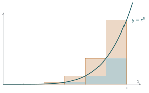

STEP III 1989、第10問
先に進む前に問題を読んでおこう。問題は STEP Support Programme の問題データベースにある： step.maths.org/questions/89-s3-q10
導入
読者は何年も積分を計算してきたはずである。\(\int_0^a x^5\,\mathrm{d}x = \frac16 a^6\) であることも、「積分は微分の逆である」から知っている。しかしそれは定理であって、定義ではない。では、積分（integral）とはそもそも何なのか。
正直に答えれば、積分とは面積であり、細い長方形の面積の和の極限（limit）として定義されるものである。この問題では、その定義だけから積分を計算することが求められる。原始関数（antiderivative）も微分積分学の基本定理（fundamental theorem of calculus）も使わず、長方形を足し合わせて極限をとることしか許されない。これは予想以上に難しい。そしてまさにそのことが、この計算を簡単にしてくれる微分積分学の基本定理がいかに驚くべき結果であるかを物語っている。
取りかかる前に
小問 (iii) の二つの和は、幅 \(\frac an\) の長方形の面積の和である。増加関数（increasing function）\(\mathrm{f}\) について、どちらの和が曲線の下の面積を過小に見積もり、どちらが過大に見積もるか。
一つ目の和は、各帯の左端 \(x = \frac{ra}{n}\)（\(r = 0, \ldots, n-1\)）での高さを用いている。増加関数ではこれが帯の中で最も低い点なので、長方形は曲線の下に収まる。これが下和（lower sum）である。二つ目の和は右端 \(r = 1, \ldots, n\) を用いるので、長方形は曲線の上にはみ出す。これが上和（upper sum）である（図 4.1.1）。定義によれば、帯を細くしていったときに両方の和が同じ極限に近づくならば、積分が存在する。
\(\mathrm{f}(x) = x^5\) の場合、どちらの和にも \(\sum r^5\) が現れる。小問 (i) と (ii) は、この和を上と下から評価するものである。
順を追って解く
段階 1 望遠鏡和
連続する六つの整数の積を \(P(r) = r(r+1)(r+2)(r+3)(r+4)(r+5)\) とおく。\(P(r) - P(r-1)\) はどうなるか。
\(P(r)\) と \(P(r-1) = (r-1)r(r+1)(r+2)(r+3)(r+4)\) は五つの因数 \(r(r+1)(r+2)(r+3)(r+4)\) を共有しているので、 \[\begin{aligned} P(r) - P(r-1) &= r(r+1)(r+2)(r+3)(r+4)\bigl[(r+5) - (r-1)\bigr] \\ &= 6\,r(r+1)(r+2)(r+3)(r+4). \end{aligned}\] \(r = 1\) から \(n\) まで和をとると、右辺は隣り合う項が打ち消し合う望遠鏡和（telescoping sum）となり、\(P(n) - P(0) = P(n)\) に帰着する。よって \[\sum_{r=1}^{n} r(r+1)(r+2)(r+3)(r+4) = \tfrac16 P(n) = \tfrac16 n(n+1)(n+2)(n+3)(n+4)(n+5).\]■
すべての \(r \geq 1\) について \(r^5 < r(r+1)(r+2)(r+3)(r+4)\) であるから、不等式（inequality）が従う。■
段階 2 下からの評価
段階 1 の方法を、下がっていく連続する五つの整数の積 \(r(r-1)(r-2)(r-3)(r-4)\) に応用せよ。\(r = 0\) から \(n - 1\) までの和を求め、\(r^5\) と比較せよ。
\(Q(r) = (r-5)(r-4)(r-3)(r-2)(r-1)r\) とおく。すると \(Q(r+1) - Q(r) = (r-4)(r-3)(r-2)(r-1)r\bigl[(r+1) - (r-5)\bigr] = 6\,(r-4)(r-3)(r-2)(r-1)r\) である。\(r = 0\) から \(n - 1\) まで和をとると、打ち消し合って \(Q(n) - Q(0) = Q(n)\) となるので、 \[\sum_{r=0}^{n-1} (r-4)(r-3)(r-2)(r-1)r = \tfrac16 (n-5)(n-4)(n-3)(n-2)(n-1)n.\] ここで項ごとに比較する。\(r = 0\) のときは両辺とも \(0\) である。\(1 \leq r \leq 4\) のときは積が \(0\) の因数を含むが、\(r^5 > 0\) である。\(r \geq 5\) のときはすべての因数が正で \(r\) 以下であり、そのうちいくつかは真に小さいので、積は \(r^5\) より小さい。\(n > 1\) であるから和には \(r = 1\) の項が含まれ、そこでは不等号が厳密に成り立つ。よって \[\sum_{r=0}^{n-1} r^5 > \tfrac16 (n-5)(n-4)(n-3)(n-2)(n-1)n. \qed\]
段階 3 積分
\(\mathrm{f}(x) = x^5\) に対する下和と上和を \(\sum r^5\) を用いて表せ。分母には \(n\) の何乗が現れるか。
\(\mathrm{f}(x) = x^5\) のとき、 \[L_n = \sum_{r=0}^{n-1} \frac{a}{n}\left(\frac{ra}{n}\right)^5 = \frac{a^6}{n^6}\sum_{r=0}^{n-1} r^5, \qquad U_n = \frac{a^6}{n^6}\sum_{r=1}^{n} r^5.\] 小問 (i) と (ii)、および \(L_n < U_n\) より、 \[\frac{a^6}{6}\cdot\frac{(n-5)(n-4)\cdots n}{n^6} \;<\; L_n \;<\; U_n \;<\; \frac{a^6}{6}\cdot\frac{n(n+1)\cdots(n+5)}{n^6}.\] 二つの分数はいずれも、\(\frac{n-3}{n} = 1 - \frac3n\) や \(\frac{n+3}{n} = 1 + \frac3n\) のような六つの因数の積であり、各因数は \(1\) に収束（converge）する。よって外側の評価はどちらも \(\frac{a^6}{6}\) に収束し、はさみうちの原理（squeeze theorem）により \(L_n\) と \(U_n\) も同じ値に収束する。両方の極限が存在して一致するので、定義により \[\int_0^a x^5\,\mathrm{d}x = \tfrac16 a^6. \qed\]

振り返り
またしても望遠鏡和。連続する整数の積の和は、第 2 章の和や積とまったく同じように打ち消し合って消えた。
評価してから、はさみうち。\(\sum r^5\) の正確な値（\(\frac{1}{12}n^2(n+1)^2(2n^2 + 2n - 1)\) である）は一度も求めなかった。両側からの評価だけで十分であった。
定義がすべてを担う。原始関数はどこにも現れなかった。すべては、和の極限としての積分の定義から導かれた。
背後にある数学
細い帯を足し合わせて面積を求めるという発想は、アルキメデス（Archimedes）にまでさかのぼる。彼は紀元前 250 年ごろ、まさにこの議論の一種によって放物線の下の面積を求めた。ニュートン（Newton）とライプニッツ（Leibniz）は積分を微分の逆として捉え直し、その後一世紀半にわたって、ほとんどの人はそのように積分を考えていた。1854 年、ベルンハルト・リーマン（Bernhard Riemann）は、今日でも大学の講義が出発点とする定義を与えた。\([a, b]\) を小さな区間に分割し、（幅）\(\times\)（その区間内のどこかでの \(\mathrm{f}\) の高さ）の和をつくり、区間を細かくしていったときにそのような和がすべて一つの極限に近づくならば、\(\mathrm{f}\) は可積分（integrable）であるという。この問題での形、すなわち等幅の帯と左右の端点を用いるものは、増加関数に対して有効な特別な場合である。一般の場合は、ジャン＝ガストン・ダルブー（Jean-Gaston Darboux）の「上和と下和」によってすっきりと扱える。
すべての関数が積分をもつわけではない
厳密な定義があれば、どのような関数が可積分であるかを問うことができる。閉区間上の連続関数（continuous function）はすべて可積分であり、増加関数もすべて可積分である。しかし、ディリクレ（Dirichlet）の関数、すなわち \(x\) が有理数（rational number）ならば \(\mathrm{f}(x) = 1\)、無理数（irrational number）ならば \(0\) とする関数を考えてみよう。どれほど細い帯にも有理数と無理数の両方が含まれるので、上和はつねに \(1\)、下和はつねに \(0\) となる。両者は決して一致せず、\(\int_0^1 \mathrm{f}\) はリーマンの意味では存在しない。1902 年、アンリ・ルベーグ（Henri Lebesgue）は、この関数も扱える（そのルベーグ積分は \(0\) である）うえに、極限操作に対してはるかに扱いやすい、より強力な積分を考案した。ルベーグ積分（Lebesgue integral）は現代の確率論（probability theory）の基礎であり、大学の 2、3 年次で出会うことになる。
離散的な微分積分
段階 1 の望遠鏡和は、姿を変えた微分積分である。「上昇階乗」（rising factorial）\(r(r+1)\cdots(r+k-1)\) は、和をとる操作に対して、\(x^k\) が積分に対して振る舞うのとまったく同じように振る舞う。和をとると因数の個数が一つ増え、新しい因数の個数で割られる。これは \(\int x^k\,\mathrm{d}x = \frac{x^{k+1}}{k+1}\) とちょうど対応している。和と積分、差分と導関数の間のこの類似は差分法（calculus of finite differences）と呼ばれ、和を計算するための強力な道具である。
思考のスキル
「定義を用いて」何かを証明せよと言われたら、定義以外は何も使わないこと。証明しようとしている事柄に依存する定理も、使い慣れた近道も使わない。
これは意外なほど難しく、近道にどれほどの価値があるかをはっきりと教えてくれる。大学では、どの講義も最初の数週間はこのように進む。まず定義があり、次に、定義から直接議論しなくて済むようにしてくれる定理が続くのである。
次の一歩
積分としての極限。STEP III 1999、第3問 に挑戦せよ。この問題では和の極限を積分に書き換える。それぞれの和について、曲線の下にある長方形を見つけよ。
アルキメデスの放物線。\(\sum_{r=1}^{n} r^2 = \frac16 n(n+1)(2n+1)\) と小問 (iii) の定義を用いて、\(\int_0^a x^2\,\mathrm{d}x = \frac13 a^3\) を証明せよ。
上昇階乗。すべての正の整数 \(k\) に対して \(\displaystyle\sum_{r=1}^{n} r(r+1)\cdots(r+k-1) = \frac{n(n+1)\cdots(n+k)}{k+1}\) が成り立つことを示せ。
正確な和。恒等式 \(r(r+1)(r+2)(r+3)(r+4) = r^5 + 10r^4 + 35r^3 + 50r^2 + 24r\) と、\(k \leq 4\) に対する \(\sum r^k\) の既知の公式を用いて、\(\sum_{r=1}^n r^5\) を正確に求めよ。
さらに学ぶために
David Bressoud, A Radical Approach to Lebesgue’s Theory of Integration（Cambridge University Press）。リーマン積分からルベーグ積分に至る物語を、各段階を必然とした問題を通して語る。
Michael Spivak, Calculus（Cambridge University Press）。第 13 章では、ここでの方法とまったく同じように、上和と下和によって積分を定義している。
Graham, Knuth & Patashnik, Concrete Mathematics（Addison-Wesley）。第 2 章では、上昇階乗と下降階乗（falling factorial）を用いて差分法を展開している。